SOAPMonitor ユーザガイド
バージョン 1.0
フィードバック: axis-dev@ws.apache.org
内容
はじめに
Webサービス開発者はしばしば、Webサービスを呼び出すために利用される SOAP メッセージと、それらのメッセージの結果を調べる必要性がでてきます。SOAP Monitor ユーティリティの目標は、特別な設定やサーバの再起動なしに、利用されている SOAP メッセージを監視する方法を、これらの開発者に提供することです。
SOAPMonitor とは
SOAPMonitor は、org.apache.axis.utils パッケージにあるユーティリティです。Webサービス開発者に上記で説明した監視機能を提供します。
いつ SOAPMonitor を利用するのか
デバッグのために SOAP メッセージを監視したい時が、このユーティリティを利用する良い機会でしょう。追加的な開発、特別な設定、アプリケーションサーバの再起動なしに、監視したい全ての SOAP メッセージを監視することができます。
SOAPMonitor は、HTTP プロトコルヘッダのようなプロトコル特有のデータを一切表示しないことに注意してください。これを行うには TCP Monitor (tcpmon) を利用すべきです。tcpmon の詳細については Axis ユーザガイドをご覧下さい。.
利用方法
準備
-
ステップ 1: 管理者アカウントを作成する
"webapps/axis/WEB-INF/users.lst" を開いて編集します。
管理者のデフォルトのアカウントは "admin" です。パスワードは好きなものを設定してください。
例) 以下の通りです。 - 例えば、"admin password" です。
user1 pass1
user2
user3 pass3
admin password
-
ステップ 2: CLASSPATH を設定する
このユーティリティを実行する前に、CLASSPATH に以下のものが含まれていることを確かめる必要があります。
- axis.jar
- jaxrpc.jar
- saaj.jar
- commons-logging.jar
- commons-discovery.jar
- activation.jar
- mail.jar
- Xerces や Crimson のような JAXP-1.1 準拠の XML パーサ
-
これで終わりです。
どのように SOAPMonitor を利用するのか
-
ステップ 0: 準備段階が完了したことを確かめてください
-
ステップ 1: SOAPMonitor アプリケーションを起動します
% java org.apache.axis.utils.SOAPMonitor [-u admin] [-w password] [-l axisURL]
または
% javaw org.apache.axis.utils.SOAPMonitor [-u admin] [-w password] [-l axisURL]
-
ステップ 2: ログインします
管理者として指定したアカウントでログインしてください。
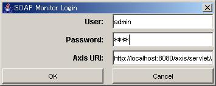
-
ステップ 3: しばらくお待ちください
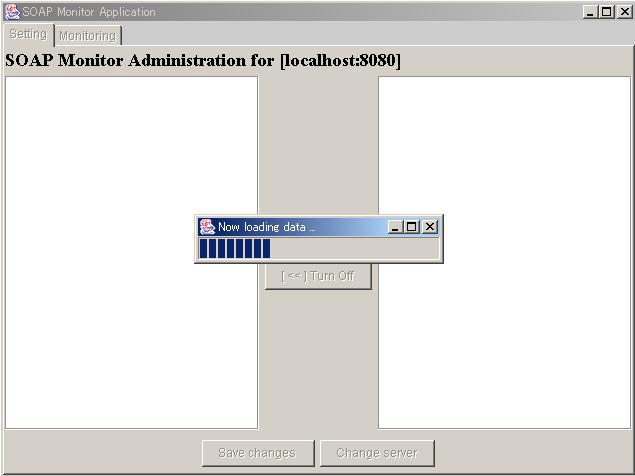
-
ステップ 4: 管理者画面が表示されます
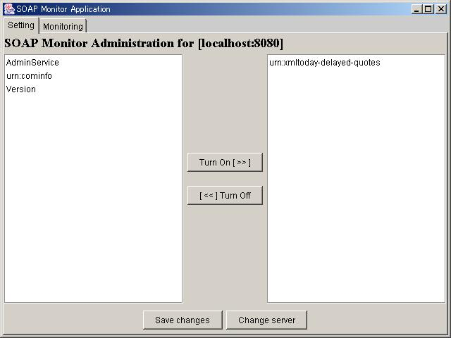
-
ステップ 5-a: 監視を有効にするには
監視を有効にするサービスをクリックし、"Turn On" ボタンを押します。
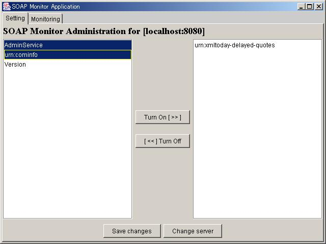
以下の画面が表示されるはずです。
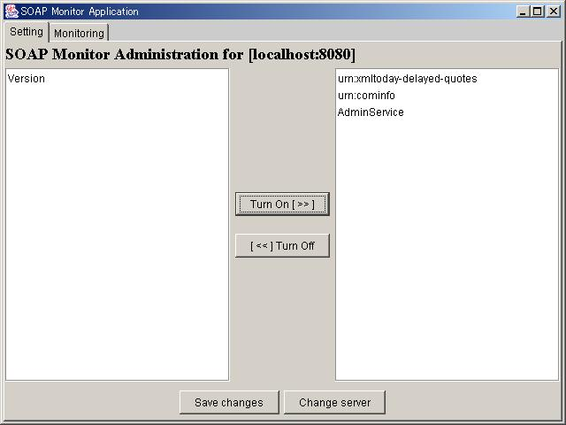
-
ステップ 5-b: 監視を無効にするには
監視を無効にするサービスをクリックし、"Turn Off" ボタンを押します。
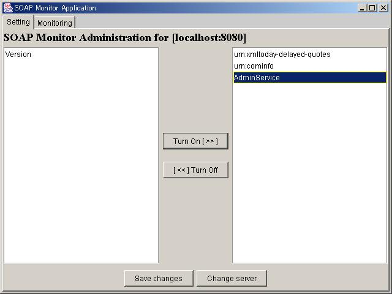
以下の画面が表示されるはずです。
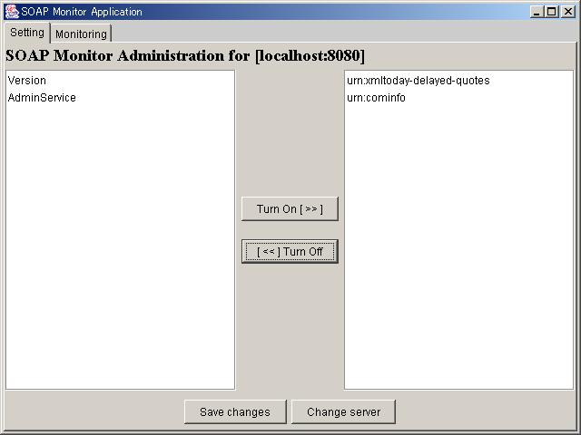
-
ステップ 6: 変更を保存する
現在の状態を保存するには "Save changes" ボタンを押します。
以下の画面が表示されるはずです。
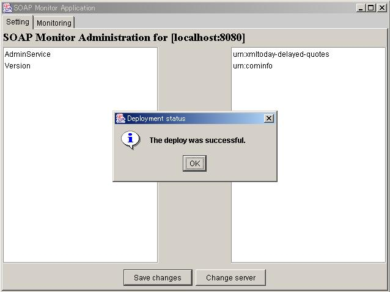
-
ステップ 7: 監視する
現在の設定で監視を開始するには "Monitoring" タブを押します。
以下の画面が表示されるはずです。
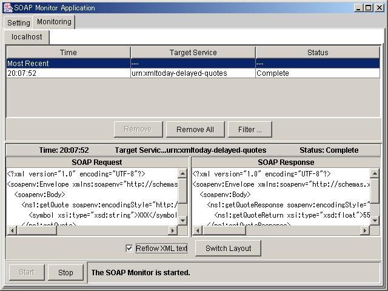
付録
バージョン比較チャート
| 項目 |
SOAPMonitorApplet(古いバージョン) |
SOAPMonitor(このバージョン) |
| アプリケーション形式 |
アプレット |
Swing アプリケーション |
| セキュリティ |
N/A (認証なし) |
OK (認証が追加されました) |
| インストール & 利用 |
- まず最初にコンポーネントをコンパイルします。
- soapmonitor ハンドラを "server-config.wsdd" にデプロイします。
- soapmonitor ハンドラで監視するサービスをデプロイします。
- "http://localhost:8080/axis/SOAPMonitor" にアクセスします。
- 監視を無効にするには soapmonitor なしでサービスを再デプロイします。
- 詳細についてはこちらをご覧下さい。
- 全てのステップは非 GUI に基づいた操作で、これらのプロセスはユーザにとって複雑です。
|
(axis.jar 内で) "java org.apache.axis.utils.SOAPMonitor" を実行するだけです。
|
エラーメッセージ
アクセス拒否の場合、以下の画面が出るでしょう。
-
"未知のホスト" の場合:
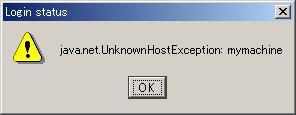
-
"ポート不一致" の場合:
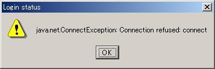
-
"認証失敗" の場合:
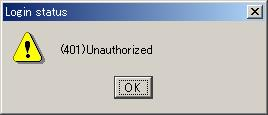